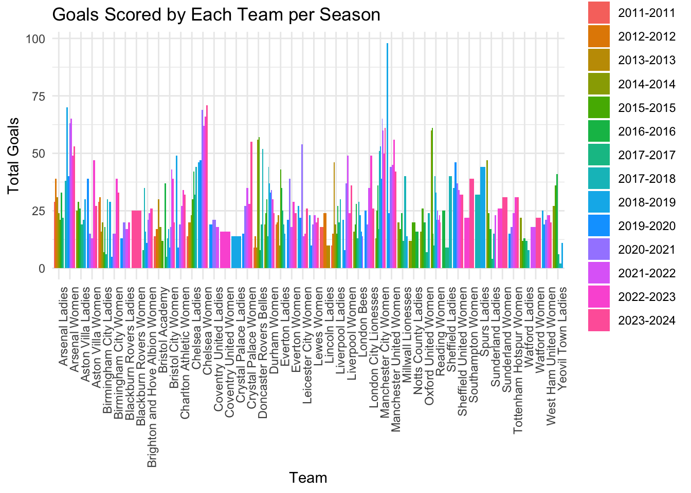

# Load necessary libraries
library(tidyverse)── Attaching core tidyverse packages ──────────────────────── tidyverse 2.0.0 ──
✔ dplyr 1.1.4 ✔ readr 2.1.5
✔ forcats 1.0.0 ✔ stringr 1.5.1
✔ ggplot2 3.5.1 ✔ tibble 3.2.1
✔ lubridate 1.9.3 ✔ tidyr 1.3.1
✔ purrr 1.0.2
── Conflicts ────────────────────────────────────────── tidyverse_conflicts() ──
✖ dplyr::filter() masks stats::filter()
✖ dplyr::lag() masks stats::lag()
ℹ Use the conflicted package (<http://conflicted.r-lib.org/>) to force all conflicts to become errorslibrary(caret)Loading required package: lattice
Attaching package: 'caret'
The following object is masked from 'package:purrr':
liftlibrary(tidymodels)── Attaching packages ────────────────────────────────────── tidymodels 1.2.0 ──
✔ broom 1.0.6 ✔ rsample 1.2.1
✔ dials 1.2.1 ✔ tune 1.2.1
✔ infer 1.0.7 ✔ workflows 1.1.4
✔ modeldata 1.4.0 ✔ workflowsets 1.1.0
✔ parsnip 1.2.1 ✔ yardstick 1.3.1
✔ recipes 1.0.10
── Conflicts ───────────────────────────────────────── tidymodels_conflicts() ──
✖ scales::discard() masks purrr::discard()
✖ dplyr::filter() masks stats::filter()
✖ recipes::fixed() masks stringr::fixed()
✖ dplyr::lag() masks stats::lag()
✖ caret::lift() masks purrr::lift()
✖ yardstick::precision() masks caret::precision()
✖ yardstick::recall() masks caret::recall()
✖ yardstick::sensitivity() masks caret::sensitivity()
✖ yardstick::spec() masks readr::spec()
✖ yardstick::specificity() masks caret::specificity()
✖ recipes::step() masks stats::step()
• Learn how to get started at https://www.tidymodels.org/start/library(ggplot2)
# Load the CSV files
ewf_matches <- read_csv("data/ewf_matches.csv")Rows: 2298 Columns: 22
── Column specification ────────────────────────────────────────────────────────
Delimiter: ","
chr (12): season_id, season, division, match_id, match_name, home_team_id, ...
dbl (8): tier, home_team_score, away_team_score, home_team_score_margin, a...
num (1): attendance
date (1): date
ℹ Use `spec()` to retrieve the full column specification for this data.
ℹ Specify the column types or set `show_col_types = FALSE` to quiet this message.ewf_appearances <- read_csv("data/ewf_appearances.csv")Rows: 4596 Columns: 23
── Column specification ────────────────────────────────────────────────────────
Delimiter: ","
chr (11): season_id, season, division, match_id, match_name, team_id, team_...
dbl (10): tier, home_team, away_team, goals_for, goals_against, goal_differ...
num (1): attendance
date (1): date
ℹ Use `spec()` to retrieve the full column specification for this data.
ℹ Specify the column types or set `show_col_types = FALSE` to quiet this message.ewf_standings <- read_csv("data/ewf_standings.csv")Rows: 258 Columns: 17
── Column specification ────────────────────────────────────────────────────────
Delimiter: ","
chr (6): season_id, season, division, team_id, team_name, season_outcome
dbl (11): tier, position, played, wins, draws, losses, goals_for, goals_agai...
ℹ Use `spec()` to retrieve the full column specification for this data.
ℹ Specify the column types or set `show_col_types = FALSE` to quiet this message.# Summarize the datasets
summary(ewf_matches) season_id season tier division
Length:2298 Length:2298 Min. :1.000 Length:2298
Class :character Class :character 1st Qu.:1.000 Class :character
Mode :character Mode :character Median :1.000 Mode :character
Mean :1.477
3rd Qu.:2.000
Max. :2.000
match_id match_name date attendance
Length:2298 Length:2298 Min. :2011-04-13 Min. : 103
Class :character Class :character 1st Qu.:2016-08-28 1st Qu.: 562
Mode :character Mode :character Median :2019-10-13 Median : 1062
Mean :2019-05-18 Mean : 2492
3rd Qu.:2022-03-30 3rd Qu.: 2071
Max. :2024-05-18 Max. :60160
NA's :1188
home_team_id home_team_name away_team_id away_team_name
Length:2298 Length:2298 Length:2298 Length:2298
Class :character Class :character Class :character Class :character
Mode :character Mode :character Mode :character Mode :character
score home_team_score away_team_score home_team_score_margin
Length:2298 Min. : 0.00 Min. : 0.000 Min. :-12.0000
Class :character 1st Qu.: 0.00 1st Qu.: 0.000 1st Qu.: -1.0000
Mode :character Median : 1.00 Median : 1.000 Median : 0.0000
Mean : 1.59 Mean : 1.486 Mean : 0.1044
3rd Qu.: 2.00 3rd Qu.: 2.000 3rd Qu.: 1.0000
Max. :11.00 Max. :12.000 Max. : 10.0000
away_team_score_margin home_team_win away_team_win draw
Min. :-10.0000 Min. :0.000 Min. :0.000 Min. :0.000
1st Qu.: -1.0000 1st Qu.:0.000 1st Qu.:0.000 1st Qu.:0.000
Median : 0.0000 Median :0.000 Median :0.000 Median :0.000
Mean : -0.1044 Mean :0.436 Mean :0.386 Mean :0.178
3rd Qu.: 1.0000 3rd Qu.:1.000 3rd Qu.:1.000 3rd Qu.:0.000
Max. : 12.0000 Max. :1.000 Max. :1.000 Max. :1.000
result note
Length:2298 Length:2298
Class :character Class :character
Mode :character Mode :character
summary(ewf_appearances) season_id season tier division
Length:4596 Length:4596 Min. :1.000 Length:4596
Class :character Class :character 1st Qu.:1.000 Class :character
Mode :character Mode :character Median :1.000 Mode :character
Mean :1.477
3rd Qu.:2.000
Max. :2.000
match_id match_name date attendance
Length:4596 Length:4596 Min. :2011-04-13 Min. : 103
Class :character Class :character 1st Qu.:2016-08-28 1st Qu.: 562
Mode :character Mode :character Median :2019-10-13 Median : 1062
Mean :2019-05-18 Mean : 2492
3rd Qu.:2022-04-01 3rd Qu.: 2074
Max. :2024-05-18 Max. :60160
NA's :2376
team_id team_name opponent_id opponent_name
Length:4596 Length:4596 Length:4596 Length:4596
Class :character Class :character Class :character Class :character
Mode :character Mode :character Mode :character Mode :character
home_team away_team goals_for goals_against goal_difference
Min. :0.0 Min. :0.0 Min. : 0.000 Min. : 0.000 Min. :-12
1st Qu.:0.0 1st Qu.:0.0 1st Qu.: 0.000 1st Qu.: 0.000 1st Qu.: -1
Median :0.5 Median :0.5 Median : 1.000 Median : 1.000 Median : 0
Mean :0.5 Mean :0.5 Mean : 1.538 Mean : 1.538 Mean : 0
3rd Qu.:1.0 3rd Qu.:1.0 3rd Qu.: 2.000 3rd Qu.: 2.000 3rd Qu.: 1
Max. :1.0 Max. :1.0 Max. :12.000 Max. :12.000 Max. : 12
result win loss draw
Length:4596 Min. :0.000 Min. :0.000 Min. :0.000
Class :character 1st Qu.:0.000 1st Qu.:0.000 1st Qu.:0.000
Mode :character Median :0.000 Median :0.000 Median :0.000
Mean :0.411 Mean :0.411 Mean :0.178
3rd Qu.:1.000 3rd Qu.:1.000 3rd Qu.:0.000
Max. :1.000 Max. :1.000 Max. :1.000
note points
Length:4596 Min. :0.000
Class :character 1st Qu.:0.000
Mode :character Median :1.000
Mean :1.411
3rd Qu.:3.000
Max. :3.000
summary(ewf_standings) season_id season tier division
Length:258 Length:258 Min. :1.000 Length:258
Class :character Class :character 1st Qu.:1.000 Class :character
Mode :character Mode :character Median :1.000 Mode :character
Mean :1.461
3rd Qu.:2.000
Max. :2.000
position team_id team_name played
Min. : 1.000 Length:258 Length:258 Min. : 8.00
1st Qu.: 3.000 Class :character Class :character 1st Qu.:14.00
Median : 6.000 Mode :character Mode :character Median :18.00
Mean : 5.767 Mean :17.81
3rd Qu.: 8.000 3rd Qu.:22.00
Max. :12.000 Max. :22.00
wins draws losses goals_for
Min. : 0.000 Min. :0.000 Min. : 0.000 Min. : 2.0
1st Qu.: 4.000 1st Qu.:2.000 1st Qu.: 3.250 1st Qu.:17.0
Median : 6.000 Median :3.000 Median : 7.000 Median :24.0
Mean : 7.322 Mean :3.171 Mean : 7.322 Mean :27.4
3rd Qu.:11.000 3rd Qu.:4.000 3rd Qu.:10.000 3rd Qu.:35.0
Max. :19.000 Max. :9.000 Max. :19.000 Max. :98.0
goals_against goal_difference points point_adjustment
Min. : 3.00 Min. :-59 Min. :-3.00 Min. :-10.0000
1st Qu.:16.00 1st Qu.:-16 1st Qu.:15.00 1st Qu.: 0.0000
Median :25.00 Median : -3 Median :23.00 Median : 0.0000
Mean :27.40 Mean : 0 Mean :25.03 Mean : -0.1047
3rd Qu.:37.75 3rd Qu.: 15 3rd Qu.:34.75 3rd Qu.: 0.0000
Max. :75.00 Max. : 91 Max. :58.00 Max. : 0.0000
season_outcome
Length:258
Class :character
Mode :character
# Number of matches per season
matches_per_season <- ewf_matches %>%
group_by(season) %>%
summarise(total_matches = n())
# Plot the number of matches per season
ggplot(matches_per_season, aes(x = season, y = total_matches)) +
geom_bar(stat = "identity") +
theme_minimal() +
labs(title = "Number of Matches per Season", x = "Season", y = "Total Matches")# Average attendance per season
average_attendance <- ewf_matches %>%
mutate(attendance = as.numeric(gsub(",", "", attendance))) %>%
group_by(season) %>%
summarise(average_attendance = mean(attendance, na.rm = TRUE))
# Plot the average attendance per season
ggplot(average_attendance, aes(x = season, y = average_attendance)) +
geom_line() +
geom_point() +
theme_minimal() +
labs(title = "Average Attendance per Season", x = "Season", y = "Average Attendance")Warning: Removed 1 row containing missing values or values outside the scale range
(`geom_line()`).`geom_line()`: Each group consists of only one observation.
ℹ Do you need to adjust the group aesthetic?Warning: Removed 1 row containing missing values or values outside the scale range
(`geom_point()`).# Number of goals scored by each team per season
goals_per_team <- ewf_standings %>%
group_by(season, team_name) %>%
summarise(total_goals = sum(goals_for))`summarise()` has grouped output by 'season'. You can override using the
`.groups` argument.# Plot the goals scored by each team per season
ggplot(goals_per_team, aes(x = team_name, y = total_goals, fill = season)) +
geom_bar(stat = "identity", position = "dodge") +
theme_minimal() +
labs(title = "Goals Scored by Each Team per Season", x = "Team", y = "Total Goals") +
theme(axis.text.x = element_text(angle = 90, hjust = 1))
# Distribution of match results
match_results <- ewf_matches %>%
group_by(result) %>%
summarise(count = n())
# Plot the distribution of match results
ggplot(match_results, aes(x = result, y = count, fill = result)) +
geom_bar(stat = "identity") +
theme_minimal() +
labs(title = "Distribution of Match Results", x = "Result", y = "Count")
# Save the plots to files
ggsave("matches_per_season.png", plot = last_plot(), width = 8, height = 5)
ggsave("average_attendance_per_season.png", plot = last_plot(), width = 8, height = 5)
ggsave("goals_per_team.png", plot = last_plot(), width = 8, height = 5)
ggsave("match_results_distribution.png", plot = last_plot(), width = 8, height = 5)
# Print the summaries and head of each dataset
print("Summary of ewf_matches:")[1] "Summary of ewf_matches:"print(summary(ewf_matches)) season_id season tier division
Length:2298 Length:2298 Min. :1.000 Length:2298
Class :character Class :character 1st Qu.:1.000 Class :character
Mode :character Mode :character Median :1.000 Mode :character
Mean :1.477
3rd Qu.:2.000
Max. :2.000
match_id match_name date attendance
Length:2298 Length:2298 Min. :2011-04-13 Min. : 103
Class :character Class :character 1st Qu.:2016-08-28 1st Qu.: 562
Mode :character Mode :character Median :2019-10-13 Median : 1062
Mean :2019-05-18 Mean : 2492
3rd Qu.:2022-03-30 3rd Qu.: 2071
Max. :2024-05-18 Max. :60160
NA's :1188
home_team_id home_team_name away_team_id away_team_name
Length:2298 Length:2298 Length:2298 Length:2298
Class :character Class :character Class :character Class :character
Mode :character Mode :character Mode :character Mode :character
score home_team_score away_team_score home_team_score_margin
Length:2298 Min. : 0.00 Min. : 0.000 Min. :-12.0000
Class :character 1st Qu.: 0.00 1st Qu.: 0.000 1st Qu.: -1.0000
Mode :character Median : 1.00 Median : 1.000 Median : 0.0000
Mean : 1.59 Mean : 1.486 Mean : 0.1044
3rd Qu.: 2.00 3rd Qu.: 2.000 3rd Qu.: 1.0000
Max. :11.00 Max. :12.000 Max. : 10.0000
away_team_score_margin home_team_win away_team_win draw
Min. :-10.0000 Min. :0.000 Min. :0.000 Min. :0.000
1st Qu.: -1.0000 1st Qu.:0.000 1st Qu.:0.000 1st Qu.:0.000
Median : 0.0000 Median :0.000 Median :0.000 Median :0.000
Mean : -0.1044 Mean :0.436 Mean :0.386 Mean :0.178
3rd Qu.: 1.0000 3rd Qu.:1.000 3rd Qu.:1.000 3rd Qu.:0.000
Max. : 12.0000 Max. :1.000 Max. :1.000 Max. :1.000
result note
Length:2298 Length:2298
Class :character Class :character
Mode :character Mode :character
print("Summary of ewf_appearances:")[1] "Summary of ewf_appearances:"print(summary(ewf_appearances)) season_id season tier division
Length:4596 Length:4596 Min. :1.000 Length:4596
Class :character Class :character 1st Qu.:1.000 Class :character
Mode :character Mode :character Median :1.000 Mode :character
Mean :1.477
3rd Qu.:2.000
Max. :2.000
match_id match_name date attendance
Length:4596 Length:4596 Min. :2011-04-13 Min. : 103
Class :character Class :character 1st Qu.:2016-08-28 1st Qu.: 562
Mode :character Mode :character Median :2019-10-13 Median : 1062
Mean :2019-05-18 Mean : 2492
3rd Qu.:2022-04-01 3rd Qu.: 2074
Max. :2024-05-18 Max. :60160
NA's :2376
team_id team_name opponent_id opponent_name
Length:4596 Length:4596 Length:4596 Length:4596
Class :character Class :character Class :character Class :character
Mode :character Mode :character Mode :character Mode :character
home_team away_team goals_for goals_against goal_difference
Min. :0.0 Min. :0.0 Min. : 0.000 Min. : 0.000 Min. :-12
1st Qu.:0.0 1st Qu.:0.0 1st Qu.: 0.000 1st Qu.: 0.000 1st Qu.: -1
Median :0.5 Median :0.5 Median : 1.000 Median : 1.000 Median : 0
Mean :0.5 Mean :0.5 Mean : 1.538 Mean : 1.538 Mean : 0
3rd Qu.:1.0 3rd Qu.:1.0 3rd Qu.: 2.000 3rd Qu.: 2.000 3rd Qu.: 1
Max. :1.0 Max. :1.0 Max. :12.000 Max. :12.000 Max. : 12
result win loss draw
Length:4596 Min. :0.000 Min. :0.000 Min. :0.000
Class :character 1st Qu.:0.000 1st Qu.:0.000 1st Qu.:0.000
Mode :character Median :0.000 Median :0.000 Median :0.000
Mean :0.411 Mean :0.411 Mean :0.178
3rd Qu.:1.000 3rd Qu.:1.000 3rd Qu.:0.000
Max. :1.000 Max. :1.000 Max. :1.000
note points
Length:4596 Min. :0.000
Class :character 1st Qu.:0.000
Mode :character Median :1.000
Mean :1.411
3rd Qu.:3.000
Max. :3.000
print("Summary of ewf_standings:")[1] "Summary of ewf_standings:"print(summary(ewf_standings)) season_id season tier division
Length:258 Length:258 Min. :1.000 Length:258
Class :character Class :character 1st Qu.:1.000 Class :character
Mode :character Mode :character Median :1.000 Mode :character
Mean :1.461
3rd Qu.:2.000
Max. :2.000
position team_id team_name played
Min. : 1.000 Length:258 Length:258 Min. : 8.00
1st Qu.: 3.000 Class :character Class :character 1st Qu.:14.00
Median : 6.000 Mode :character Mode :character Median :18.00
Mean : 5.767 Mean :17.81
3rd Qu.: 8.000 3rd Qu.:22.00
Max. :12.000 Max. :22.00
wins draws losses goals_for
Min. : 0.000 Min. :0.000 Min. : 0.000 Min. : 2.0
1st Qu.: 4.000 1st Qu.:2.000 1st Qu.: 3.250 1st Qu.:17.0
Median : 6.000 Median :3.000 Median : 7.000 Median :24.0
Mean : 7.322 Mean :3.171 Mean : 7.322 Mean :27.4
3rd Qu.:11.000 3rd Qu.:4.000 3rd Qu.:10.000 3rd Qu.:35.0
Max. :19.000 Max. :9.000 Max. :19.000 Max. :98.0
goals_against goal_difference points point_adjustment
Min. : 3.00 Min. :-59 Min. :-3.00 Min. :-10.0000
1st Qu.:16.00 1st Qu.:-16 1st Qu.:15.00 1st Qu.: 0.0000
Median :25.00 Median : -3 Median :23.00 Median : 0.0000
Mean :27.40 Mean : 0 Mean :25.03 Mean : -0.1047
3rd Qu.:37.75 3rd Qu.: 15 3rd Qu.:34.75 3rd Qu.: 0.0000
Max. :75.00 Max. : 91 Max. :58.00 Max. : 0.0000
season_outcome
Length:258
Class :character
Mode :character
print("Head of ewf_matches:")[1] "Head of ewf_matches:"print(head(ewf_matches))# A tibble: 6 × 22
season_id season tier division match_id match_name date attendance
<chr> <chr> <dbl> <chr> <chr> <chr> <date> <dbl>
1 S-2011-2011-1… 2011-… 1 FA Wome… M-2011-… Chelsea L… 2011-04-13 2510
2 S-2011-2011-1… 2011-… 1 FA Wome… M-2011-… Lincoln L… 2011-04-13 742
3 S-2011-2011-1… 2011-… 1 FA Wome… M-2011-… Birmingha… 2011-04-14 602
4 S-2011-2011-1… 2011-… 1 FA Wome… M-2011-… Liverpool… 2011-04-14 835
5 S-2011-2011-1… 2011-… 1 FA Wome… M-2011-… Everton L… 2011-04-20 220
6 S-2011-2011-1… 2011-… 1 FA Wome… M-2011-… Liverpool… 2011-04-20 341
# ℹ 14 more variables: home_team_id <chr>, home_team_name <chr>,
# away_team_id <chr>, away_team_name <chr>, score <chr>,
# home_team_score <dbl>, away_team_score <dbl>, home_team_score_margin <dbl>,
# away_team_score_margin <dbl>, home_team_win <dbl>, away_team_win <dbl>,
# draw <dbl>, result <chr>, note <chr>print("Head of ewf_appearances:")[1] "Head of ewf_appearances:"print(head(ewf_appearances))# A tibble: 6 × 23
season_id season tier division match_id match_name date attendance
<chr> <chr> <dbl> <chr> <chr> <chr> <date> <dbl>
1 S-2011-2011-1… 2011-… 1 FA Wome… M-2011-… Chelsea L… 2011-04-13 2510
2 S-2011-2011-1… 2011-… 1 FA Wome… M-2011-… Chelsea L… 2011-04-13 2510
3 S-2011-2011-1… 2011-… 1 FA Wome… M-2011-… Lincoln L… 2011-04-13 742
4 S-2011-2011-1… 2011-… 1 FA Wome… M-2011-… Lincoln L… 2011-04-13 742
5 S-2011-2011-1… 2011-… 1 FA Wome… M-2011-… Birmingha… 2011-04-14 602
6 S-2011-2011-1… 2011-… 1 FA Wome… M-2011-… Birmingha… 2011-04-14 602
# ℹ 15 more variables: team_id <chr>, team_name <chr>, opponent_id <chr>,
# opponent_name <chr>, home_team <dbl>, away_team <dbl>, goals_for <dbl>,
# goals_against <dbl>, goal_difference <dbl>, result <chr>, win <dbl>,
# loss <dbl>, draw <dbl>, note <chr>, points <dbl>print("Head of ewf_standings:")[1] "Head of ewf_standings:"print(head(ewf_standings))# A tibble: 6 × 17
season_id season tier division position team_id team_name played wins draws
<chr> <chr> <dbl> <chr> <dbl> <chr> <chr> <dbl> <dbl> <dbl>
1 S-2011-20… 2011-… 1 FA Wome… 1 T-001-T Arsenal … 14 10 2
2 S-2011-20… 2011-… 1 FA Wome… 2 T-003-T Birmingh… 14 8 5
3 S-2011-20… 2011-… 1 FA Wome… 3 T-013-T Everton … 14 7 4
4 S-2011-20… 2011-… 1 FA Wome… 4 T-016-T Lincoln … 14 6 3
5 S-2011-20… 2011-… 1 FA Wome… 5 T-006-T Bristol … 14 4 4
6 S-2011-20… 2011-… 1 FA Wome… 6 T-008-T Chelsea … 14 4 3
# ℹ 7 more variables: losses <dbl>, goals_for <dbl>, goals_against <dbl>,
# goal_difference <dbl>, points <dbl>, point_adjustment <dbl>,
# season_outcome <chr>